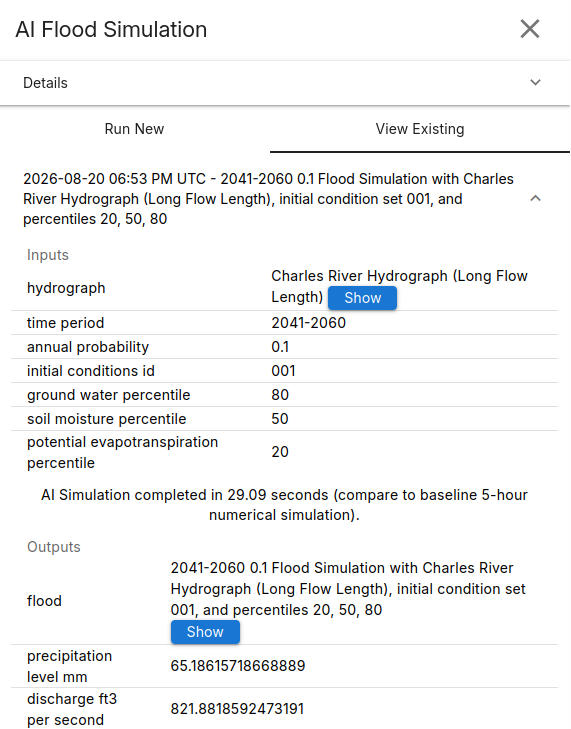
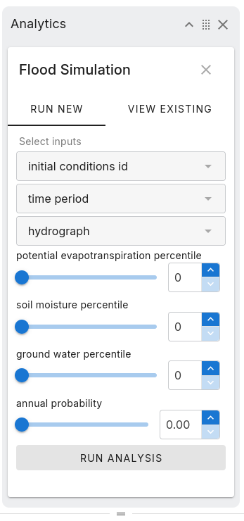

Introduction
The Analytics panel available in GeoDatalytics allows you to run computational or AI tasks on your data. This can include climate simulations, computer vision, infrastructure analysis, and data generation. GeoDatalytics comes with a few pre-made tasks for basic use cases, but you may need to add other tasks for your use case. In order to add your own Analytics tasks, you will need your own application instance for which you have access to modify code on the server. Or, you can Contact Kitware for assistance integrating custom tasks.
Architecture
Analytics tasks are run asynchronously on a separate container, so long-running tasks will not interrupt the performance of the Django web server. When the web server receives a request to run an Analytics task, it will submit the task to a queue brokered by a RabbitMQ service.
A GeoDatalytics instance can have one or more worker containers running a Celery service. The primary production instance of GeoDatalytics uses one celery worker hosted on an Amazon EC2 container. If you are managing your own application instance, you may wish to provision more than one worker according to your expected load.
When a worker is not busy, it will pick up any tasks waiting on the RabbitMQ queue. It is essential to understand this architecture when implementing an Analytics task. The Celery worker that will run the task is separate from the web server and does not have the context of the request to run the task. However, both the Django web server and the Celery worker have access to the application’s PostgreSQL database. Thus, an Analytics task must rely on the database for loading inputs and saving outputs.
Task Result Objects
The TaskResult object is used to record the state of a running task in the database. The web client receives updates about the task whenever the TaskResult object is updated. During the execution of the task, the TaskResult object should be regularly updated with status messages and any error messages that may arise. The TaskResult object also stores the inputs and outputs of the task.
When a user asks the server to start running a task, the server will synchronously process that request. It will first validate the task inputs; if an input is missing or incorrect, the request will receive a 400 Bad Request response with an informative error message. If all inputs are present and correct, the server will create a new TaskResult object, then spawn an asynchronous task with that object as an input, then without waiting for the asynchronous task, it will synchronously return the TaskResult object to the client. Since the client immediately receives the TaskResult object, it can immediately show the task status UI, even if the asynchronous task has not yet been picked up by a worker. The task status UI will show a loading bar with the initial status message until the task is picked up.
When a worker starts running the task, it will start making updates to the TaskResult object that was passed as an argument. Those database updates will be propagated to the task status UI. When implementing a custom task, it is important to update the status as often as possible so the user receives more feedback. When the TaskResult object is marked as complete, the task status UI will show the object’s outputs. For Dataset and Chart outputs, a button will appear for the user to visualize the output (Datasets on the map and Charts in the Charts panel).

Task Definition
A task is defined in the server code with a Python class. Each task class is a subclass of the abstract class AnalysisType. The abstract class outlines the required attributes and functions that must be implemented in each subclass. Subclasses are defined in the same folder (uvdat/core/tasks/analytics). Each subclass should be registered in the __init.py__ file in that folder (without this registration, the task will not appear in the web client Analytics panel).
Inputs and Outputs
Subclasses of AnalysisType must specify inputs and outputs for the task.
For outputs, an attribute output_types defines a mapping of all expected outputs and their types. Types can be basic data types (string or number) or certain GeoDatalytics objects (Dataset or Chart). A task can create other GeoDatalytics objects during execution, but they should be created with a relationship to a dataset. The task should return the dataset as output; this creates a uniform interface to visualize task outputs.
For inputs, an attribute input_types defines a mapping of all expected inputs and their types. Types can be basic data types (string or number) or any GeoDatalytics object (Dataset, Chart, Layer, LayerFrame, FileItem, RasterData, VectorData). For GeoDatalytics object inputs, the user will select from a list of available objects of that type, returned by a query defined in get_input_options.
The get_input_options function will return a mapping of valid choices for each input. This function is run when a user is requesting the form to spawn a new task of this type, so the options lists are dynamically generated. For inputs that should show a selection dropdown, return a list of objects that should appear in the dropdown (this could be a static list or a database query). For inputs that should show a numeric slider, return a list containing a single dictionary that defines the minimum, maximum, and step for the slider. For inputs that should show a freeform text input, return an empty list.

Creating your own task
As you implement your own task, it may be helpful to reference some examples. In the next section, a fake example is provided to highlight the most important points of these instructions. For specific use cases, you can find pre-made tasks defined in this folder.
One of the examples in that folder, uncertainty_quantification.py, was contributed by one of our collaborators at the Sustainability and Data Sciences Laboratory at Northeastern University, written referencing this documentation.
We recommend that you implement your custom task in the same folder, along with the pre-made tasks. Create a python file there with a unique, concise, and informative name. In that file you will define a subclass of AnalysisType and a Celery task function that will be called asynchronously.
Note
In order to register your task in your application, you will need to add it to the analysis_types definition in uvdat/core/tasks/analytics/__init__.py.
Creating a subclass of AnalysisType
You will need to provide the following attributes and functions:
-
name: a unique, concise, and informative name (it is recommended to match the file name but with spaces and capitalization). -
description: This will appear as a tooltip next to the name in the list of analysis types. -
details(Optional): If specified, the UI for spawning this task will include an expandable “Details” section with this information. -
db_value: This is a unique string identifier for the task that will be stored in the database for everyTaskResultobject created for this task type. The database column is constrained to 25 characters, so this string must be under that limit (it is recommended to match or abbreviate the file name). -
input_types: A mapping of input variable names (camel case with underscores) to type strings. Valid type strings are “number”, “string”, “dataset”, “chart”, “network”, “rasterdata”, “vectordata”, “fileitem”, “layer”, “layerframe”, “region”, and "taskresult" (case insensitive). Input types other than “number” and “string” are database objects; the user will select from a list of available objects of that type, returned by a query you will define. -
input_defaults(Optional): A mapping of input variable names to default values. Not every input needs a default. If not specified, no inputs will have defined defaults, but the client application may select defaults for some inputs according to the user’s currently visible layers. -
optional_inputs(Optional): A list of input variable names. Input variables included in this list will be considered optional, so they will not be required in the task form. If not specified, no inputs will be optional; all inputs will be required. -
output_types: A mapping of output variable names (camel case with underscores) to type strings. Valid type strings are “number”, “string”, “dataset”, and “chart” (case insensitive). Your task can create other types of objects during execution, but they should be created with a relationship to a dataset. The task should return the dataset as output; this creates a uniform interface to visualize task outputs. -
attribution: A string listing the contributing institutions/individuals for this task. This is a way to provide credit to any third-party libraries or AI models you might leverage in this task. -
is_enabled: A function that returns a boolean value stating whether the task is available for users to run. This can just return true if the task is always available. Optionally, it could return a settings attribute if you would like to make a feature flag for enabling the task. If you do return a settings attribute for this, you will need to initialize that settings attribute inuvdat/settings/base.py. You can follow the same syntax used to define the otherUVDAT_ENABLE_*settings attributes. You could also implement custom logic here if you have a more advanced use case. -
get_input_options: A function that returns a mapping of input variable names (camel case with underscores, matching the keys ofinput_types) to lists of options. These could be static or dynamic lists, range specifications for numeric sliders, or a database querysets. Alternatively, an empty list will enable a freeform string input. The example implementation demonstrates each of these. Note that for database querysets, you may need to reference Django’s Queryset API documentation. -
validate_inputs(Optional): If this method is defined, you can perform additional validation on the inputs passed by the user. The superclass defines this method and will minimally check for the presence of all inputs. If you override this method, be sure to invoke the superclass implementation to first verify that all inputs have been provided. Then you can do some additional validations. If an input is invalid, raise anAnalysisInputError(a specialized exception type) with an informative error message. -
run_task: A function that creates aTaskResultobject and spawns the asynchronous Celery task, passing theTaskResultobject’s ID as an argument. You may pass additional arguments, but all arguments must be serializable (spawning a task will record a serialization of the function call to the task queue). This function should also return theTaskResultobject so that the client can receive it. -
finalize: This method allows you to perform any last operations after the task has been completed (e.g. final status updates).
Creating an asynchronous Celery task
-
The function must have the
shared_taskdecorator from Celery applied. This decorator will register the task and make it available to spawn asynchronously. You should also specifybase=AnalysisTaskas an argument to this decorator to ensure that your task will inherit base class functionality. Note:AnalysisTaskis the superclass for the task function andAnalysisTypeis the base class for the task definition class. -
At minimum, the function should accept a
result_idargument. At the start of execution, the task should get theTaskResultobject from the database by its ID. The task should make regular status updates to that object. If an error occurs, an error message should be saved to that object. You may also choose to modify the object’s name and/or metadata during execution. Be sure to save the result object immediately after any updates so that the new object state will be reflected in the web client. TheTaskResultobject has some convenience functions for common updates:write_status,write_error,write_outputsandcomplete. These convenience functions already include a save statement. -
You can get the task’s inputs from the
TaskResultobject. Inputs that indicate a database object will only contain the ID of that object, so you must fetch the complete object from the database. -
If your task calls a function from an external library, be sure to install that dependency and lazily import it during task execution. To install the dependency and add it to the project requirements under the “tasks” extra, use
uv add --optional tasks [dependency](this should modifypyproject.tomlanduv.lock). You can import your dependency at the top of the task function, but not at the top of the whole file. Top-level imports of task dependencies will break tests and cause import errors on the web server. The test suite and web server do not have the tasks dependencies installed. -
If your task writes a file to disk, it is recommended to write that file to a temporary directory with the python
tempfilelibrary. In deployed application instances, you may not have control over the worker’s file system. To save the file’s contents to the database, you can create aFileItemobject. TheFileItemshould be associated with aDataset, which will be an output of the task. To make the dataset available for visualization, you must spawn a task to convert the dataset. The example implementation in the next section demonstrates this. -
If your task creates a chart as output, you will need to reference the ChartJS docs to populate certain fields. The
chart_datavalue should adhere to the data structures schema and thechart_optionsshould adhere to the options schema.
Example Implementation
The example code below demonstrates the most important things to note for implementing your own task. This code includes the definition of the AnalysisType subclass, as well as the definition of the asynchronous Celery task that is spawned by it (which uses the @shared_task(base=AnalysisTask) decorator).
In this example, “My Custom Analytics Task” leverages a library called my_custom_task_dependency to segment anything from aerial imagery. The task takes five inputs: a text prompt, segmentation mode, threshold, number of epochs, and the imagery to segment. The task provides four outputs: the segmented polygons as a vector dataset, a chart showing the number of polygons segmented per epoch, an accuracy number, and a summary string.
class MyCustomAnalyticsTask(AnalysisType):
def __init__(self):
super().__init__()
self.name = 'My Custom Analytics Task'
self.description = 'A fake task for demonstrating implementation'
self.details = 'An optional long string to provide more info'
self.db_value = 'my_custom_analytics_task' # <25 characters
self.input_types = {
'text_prompt': 'string',
'segmentation_mode': 'string',
'threshold': 'number',
'num_epochs': 'number',
'imagery': 'RasterData',
'region': 'Region',
}
self.input_defaults: {
'segmentation_mode': 'optimized',
'threshold': 0.5,
'num_epochs': 100,
}
self.optional_inputs = ['region']
self.output_types = {
'segmented_polygons': 'Dataset',
'epochs_chart': 'Chart',
'accuracy': 'number',
'summary': 'string',
}
# credit to institutions/individuals who contributed to this task
# or third-party libraries/models
self.attribution = 'Kitware Inc.'
@classmethod
def is_enabled(cls):
# If this task is always available, simply return true
# You may also choose to implement a feature flag for this task:
return settings.ENABLE_MY_CUSTOM_TASK
def get_input_options(self):
return {
'text_prompt': [] # free string input
'segmentation_mode': [ # select from valid strings
'fast', 'accurate', 'optimized',
],
'threshold': [ # slider input
{'min': 0, 'max': 1, 'step': 0.01}
],
'num_epochs': [ # select from valid numbers: 1, 10, or 100
10 ** exp for exp in range(0, 3)
],
# perform a database query to get valid objects
'imagery': RasterData.objects.filter(
dataset__category='imagery'
),
'region': Region.objects.all(),
}
# This override is optional; superclass defines a default implementation
def validate_inputs(self, inputs):
# Call superclass implementation first
super().validate_inputs(inputs)
# Then perform any custom validation.
# The UI slider won't allow threshold values outside the specified
# range, but a direct API call could provide an invalid value.
# You could validate all inputs in a similar manner,
# but this is just a minimal example.
threshold = float(inputs.get("threshold"))
if threshold < 0 or threshold > 1:
err_msg = "Threshold must be between 0 and 1"
raise AnalysisInputError(err_msg)
def run_task(self, *, project, **inputs):
text_prompt = inputs.get('text_prompt')
# Create a TaskResult object to store task inputs, outputs, state
result = TaskResult.objects.create(
name=f'Segmentation of {text_prompt}',
task_type=self.db_value,
inputs=inputs,
project=project,
status='Initializing task...'
)
# spawn an asynchronous task, pass in the TaskResult ID
my_custom_task.delay(result.id)
return result
def finalize(self, result):
# Format completion time in minutes instead of seconds
seconds = (result.completed - result.created).total_seconds()
minutes = seconds / 60
result.write_status(f'Completed in {minutes} minutes.')
# After the class definition, define a task that can be run asynchronously
# that accepts a TaskResult ID as the only argument
@shared_task(base=AnalysisTask)
def my_custom_task(result_id):
import my_custom_task_dependency # lazy-import any dependencies
# Get the TaskResult object from the database
result = TaskResult.objects.get(id=result_id)
# Get pre-validated inputs from TaskResult object
text_prompt = result.inputs.get('text_prompt')
segmentation_mode = result.inputs.get('segmentation_mode')
threshold = result.inputs.get('threshold')
num_epochs = result.inputs.get('num_epochs')
# Inputs with object references will contain only the ID
imagery_id = result.inputs.get('imagery')
region_id = result.inputs.get('region')
# Fetch the objects by their IDs
imagery = RasterData.objects.get(id=imagery_id)
region = None
# Protect against None values for optional inputs
if region_id is not None:
region = Region.objects.get(id=region_id)
# Make updates to the TaskResult object during execution
result.write_status('Reading imagery...')
# Get imagery data from RasterData object
imagery_path = utilities.field_file_to_local_path(
imagery.cloud_optimized_geotiff # field containing tiff
)
result.write_status('Performing segmentation...')
outputs = my_custom_task_dependency(
imagery_path,
text_prompt=text_prompt,
segmentation_mode=segmentation_mode,
threshold=threshold,
num_epochs=num_epochs,
region=region,
)
segmented_polys_path, epochs_data, accuracy, summary = outputs
result.write_status('Saving results...')
# Create a new Dataset to represent the segmented polygons output
dataset = Dataset.objects.create(
name=f'Segmentation of {text_prompt} in {imagery.name},
description='Generated by My Custom Task',
category='segmentation',
metadata={
# Add any extra relevant info to metadata
},
)
# Optional: add tags to the dataset
dataset.set_tags(['segmentation', 'analytics'])
# Optional: add the dataset to the result's project
result.project.datasets.add(dataset)
# Create a FileItem to store the file at segmented_polys_path
file_name = 'segmentation.shp'
file_item = FileItem.objects.create(
name=file_name,
dataset=dataset,
file_type='shp',
file_size=output_path.stat().st_size,
)
# Save data from segmented_polys_path to FileItem
with open(segmented_polys_path, 'rb') as f:
file_item.file.save(file_name, File(f))
# Run dataset conversion; ensures data is visualization-compatible
# For this example, the shapefile will be converted to GeoJSON.
# Run synchronously so task is not completed before data is ready
dataset.spawn_conversion_task(run_mode='sync')
# Create a Chart object to store epochs_data
chart = Chart.objects.create(
name='Polygons Per Epoch',
description='Generated by My Custom Task',
project=result.project,
metadata={
# Add any extra relevant info to metadata
}
)
# chart_data should adhere to ChartJS data schema
chart.chart_data = {
"labels": epochs_data['epoch_ids'], # along the x axis
# one or more datasets of y data for each x label
"datasets": [dict(
data=epochs_data['num_polygons'],
label='Number of polygons segmented',
borderColor='#0000ff',
backgroundColor='#0000ff',
)]
}
# chart_options should adhere to ChartJS options schema
chart.chart_options = dict(
chart_title='Number of Segmented Polygons per Epoch',
x_title='Epoch ID',
y_title='Number of polygons',
)
chart.save()
# Record outputs on TaskResult
result.write_outputs(dict(
'segmented_polygons': dataset.id,
'epochs_chart': chart.id,
'accuracy': accuracy,
'summary': summary,
))